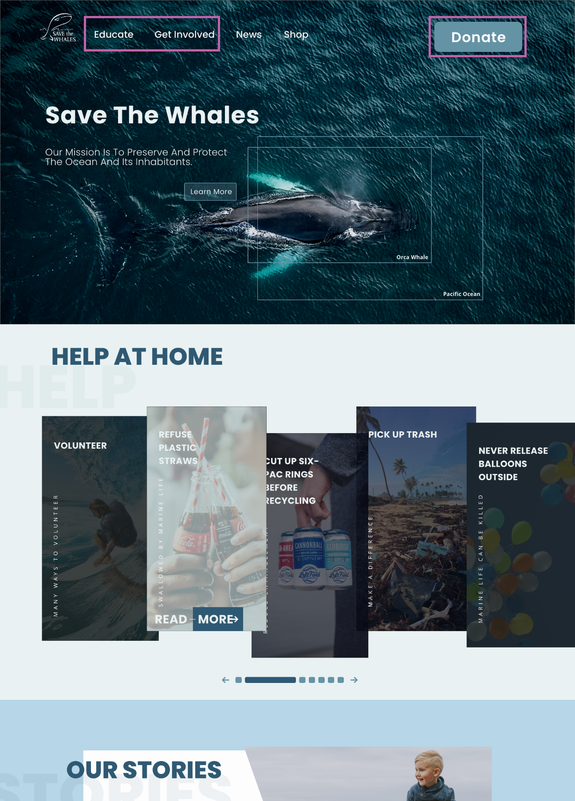

Overview
Savethewhales.org is a small non-profit organization's website that is committed to helping the ocean and
it's inhabitants. Most of their impact comes from their educational programs and helping save stranded marine
life. Users can support Save The Whales by donating or shopping from one of their partners. It is run by a
mother and daughter and has a close knit community feel.
Role
UI Design, UI Style Guide, UX Design, UX Research, Information Architecture Strategy, Front End Development, Animations.
Duration
2 Weeks
Team
Three Designers
The Problem
Save The Whales was designed to preserve and protect the
ocean and it's inhabitants. Our organization is not providing insights on what we are doing to help or how we are
making an impact, which makes interacting with our website confusing for our users. This is detracting from our
credibility which is keeping people from learning how to help save ocean life on our website. How might we improve our
hierarchy of information so that our customers are successful based on a transparent and easy donation process
and gaining useful knowledge on how to make an impact?
Opportunities
- UI Style Guide with updated branding
- New information architecture and hierarchy of information
- A more user friendly approach to educating users
- Building trust and confidence in the organization through design
- Responsive site to improve usability and traffic for mobile users
Proto Persona
Meet Olive! Olive is our Proto Persona for Save The Whales
ideal user demographic.
User Interviews
We interviewed five users, between the ages of 22 to 57,
who we thought had similar traits to Olive. Our goal of each interview was to understand a users'
impression of non-profits and to understand a users' general attitudes toward saving the whales and other
marine life.
Through an affinity diagram, we summarized our key findings
from our interviews. We learned that Olive is eager to help save marine life and she already knows the wellbeing
of our oceans are in danger. She doesn't have a lot of free time and would like to do what she can from
home. She would be willing to donate to an organization to help, but she feels like many charities are scams and
will only donate to an organization that is trustworthy with a community feel. Olive also has kids who encourage
her to help save the environment because she wants to build a better future for them. Olive is most likely
someone in a creative career path who has children. She doesn't know a lot about whales but she is eager to
learn with her kids and wants to be a part of a community.
We transferred our research findings to our updated user
persona. Looking forward we know the things Olive is looking for in Save The Whales website is connection,
transparency, a future, empowerment, trust and simplicity.
User Persona
User Insight Statement
Olive Brown needs to ensure a non-profit's credibility
through their impact stories because she likes to connect emotionally to a cause.
During user
interviews we discovered that our users are hesitant to donate money to a non-profit when they don't know
where the money is going. Therefore, we believe that providing impact data will encourage users to learn more about the
cause and that we might be able to help if we do this through success stories.
We might do this by
highlighting what we are fighting for in our mission statement and providing examples. Doing this will allow our
product to create a community that earns our users trust and bonds them emotionally to our cause.
UX Hypothesis
We believe providing clear examples of our impact through
stories and data on how our efforts have helped conserve the ocean for people who want to help conserve marine
life and learn more will achieve a community of volunteers and more donations.
Our user research gave us meaningful insights on where we
needed to add value to the Save The Whales website through design.
Value Proposition
Save The Whales is developing a better donate feature, and
more ways to educate and share information. We are helping people who want to conserve marine life to learn
more on how to make an impact in their homes or by donating.
We are better because we are a smaller
organization with a community feel that fosters a personal connection to saving the whales. We are believable
because we provide clear examples of our impact through stories and data on how our efforts have helped conserve
the ocean.
SWOT Analysis
Feature Prioritization matrix
The features we wanted to prioritize with the most impact
were easier ways to help, more educational resources, a better donation experience, and quality imagery. We
worked on transfering these features to a user flow.
User flow
Our user flow reflects our research findings and our SWOT
analysis. The flow is centered around a user taking control of the new value we added to the website where they
have the opportunity to learn, get involved, and donate. Our strengths are highlighted in the flow because we
showcase our impact and build trust through it.
Sitemap and card sort
From our research and our SWOT analysis we sorted our
websites information architecture to create a more user friendly experience. We decided our top navigation bar
should include 'Educate', 'Get Involved', 'News', 'Shop' and a call to
action button for donating. This gives our users a simplified flow of learning about the organization and
developing a community feel users need to build trust. Users can also learn all about whales and marine life
and form a connection to the cause. Under the 'Get Involved' tab users can volunteer or simply help
from home. Under 'Get Involved' there is also 'Our Stories' where users can deepen their
connection to the community and learn about the organizations impact through stories.

Wireframes
We created responsive wireframes for desktop, tablet, and
mobile devices with our updated sitemap. In our wireframes we decided how to showcase the features we knew we
wanted to include and the value we knew we had to create. On the front page we decided to put ways to help from
home, our impact in the form of stories, and finally educational resources to learn about
whales.
Everything on the donation screen is above the fold to provide a seamless and stress free
process, thus creating a trustworthy experience for the users. In addition, you can now set up a reoccurring
donation to boost donations for Save The Whales. There is also more payment methods available now making it as
user friendly as possible. View the wireframe prototype here.
UI Style guide
Our primary color palate reflects the ocean with a few pops
of color for emphasis. We chose san serif typography to make the page as fluid as possible.
Other Design choices
I was the main designer on this project and our team chose
to move forward with my design choice. To advocate for my ideas I gathered inspiration
and made some key design choices with meaning behind them to present to my teammates.
I wanted to use Typography as more than just text and have it play into the
design. Since the general theme has an ocean feel it provided a lot of interesting opportunities for the
design.
Previously all lines of information were over 100 characters long making them not engaging and
hard to read. Users tend to prefer 40-60 characters long so I needed to come up with a way to showcase important
information in a way that makes it interesting to read. To do this I made interactive hover animations that
showcase specific information for users to uncover. The interactivity and feedback that the animations provide
create a more engaging learning environment for users. View the
prototype here.

Usability Testing
To test our sites new layout we tested five users and asked
them to find the websites purpose, learn about whales, and make a donation. Through usability testing we
determined we needed to revise our navigation bar by moving 'Our Purpose' under 'Educate'. We also made the
donate button a bigger call to action because people were having trouble finding it.
Iterations
Coding
I coded this website as a personal project after our team
concluded our project. I only coded the landing page and plan on coding more pages in the user flow later on.
The page is responsive and I used Webflow to help me out in the beginning then used my own CSS, HTML, and
Javascript knowledge. Check it
out!
Conclusion
All in all, this is my favorite design to date! I loved
everything about the design because it shows my development as a designer throughout the process. In the future,
I would love to get in contact with the stakeholders and help them use their website as a tool to help grow
their small organization in a way that works for them - whether this means driving social media traffic,
donations, or more interactivity to the educational programs while everyone is stuck in quarantine.
What I learned
Teamwork
Master of Adobe XD
A lot about
whales
How to build trust and confidence through design
How to make a design tell a story